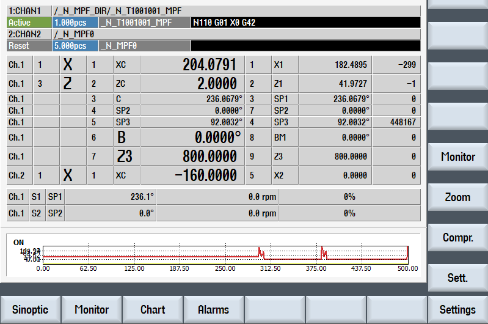
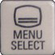
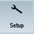
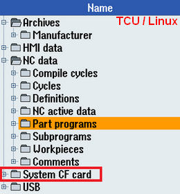
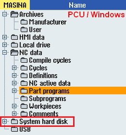
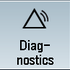
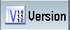
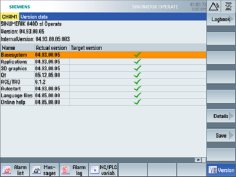
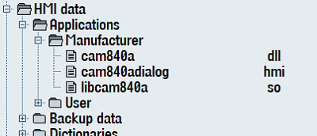
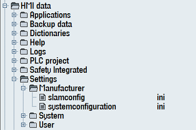

Create MyHMI /3GL poate fi utilizat pentru a crea extensii HMI pentru SINUMERIK 840D sl si SINUMERIK ONE sau interfete utilizator de sine statatoare pentru SINUMERIK 840D sl, SINUMERIK ONE si SINUMERIK MC.
Create MyHMI /3GL SINUMERIK Create MyHMI /3GL permite dezvoltarea de aplicatii de nivel inalt in C++, integrat cu bibliotecile Qt pentru SINUMERIK Operate pe SINUMERIK PCU 50.5, SIMATIC IPC427E sau IPC477E respectiv pe SINUMERIK NCU 7x0 sau NCU SINUMERIK ONE.
Cam840 este o aplicatie ce exemplifica monitorizarea variabilelor (utilizand un grafic dinamic) sau pentru salvarea unui jurnal de alarme...
Identificare sistem tinta Sinumerik
Interfata HMI (Human Machine Interface) a sistemului Sinumerik poate fi bazata pe sistemul Linux existent pe NCU, ce ruleaza de pe cardul CF al unitatii NCU, sau pe un sistem Windows instalat pe o unitate PC separata, conectata in retea la NC.
Pentru a instala o noua aplicatie este necesara identificarea sistemului de operare (Linux sau Windows), a calculatorului ce ruleaza interfata HMI (NCU sau un calculator extern precum un PCU [PC Unit] sau IPC [Industrial PC]) si calea de instalare corecta a soft-ului HMI.
Tipul sistemului poate fi identificat accesand Aria de Operare 'Setup', meniul 'System data' ...


...prin verificare locatiei datelor sistem.
Daca este prezent 'System CF card' SINUMERIK Operate ruleaza sub Linux de pe unitatea NCU.
Daca este prezent 'System HDD' SINUMERIK Operate ruleaza sub Windows de pe o unitate PCU sau IPC.


Pentru un sistem ce ruleaza sub Linux, de pe cardul CF al unitatii NCU, calea Sinumerik Operate este:
/card/oem/sinumerik/hmi
Pentru un sistem ce ruleaza sub Windows, de pe HDD/SSD al unitatii PCU sau IPC, calea Sinumerik Operate poate fi identificata din setarile Windows:
... pentru un sistem ce ruleaza sub Windows XP calea implicita este:
F:/hmisl/oem/sinumerik/hmi
... pentru un sistem ce ruleaza sub Windows7 sau Windows10 calea implicita este:
C:/Program Files (x86)/Siemens/MotionControl /oem/sinumerik/hmi
Identificare versiune
Versiunea MyHMI/3GL utilizat in aplicatie trebuie sa fie in concordanta (aceeasi) cu versiunea Sinumerik Operate.
Versiunea sistemului HMI (Sinumerik Operate) poate fi identificata in Aria de Operare 'Diagnosis', meniul 'Version' ...



Descarcare Aplicatii / Download Apps
Versiunea aplicatiei trebuie sa corespunda versiunii sistemului tinta, identificata ca mai sus ...
Testare aplicatie MyHMI/3GL pe un simulator Sinumerik ...[optional]
Poate fi util ca inainte de instalarea aplicatiei pe un sistem Sinumerik real, aceasta sa fie testata pe un simulator.
Aplicatia Create MyHMI/3GL (compilata pentru Windows) poate fi testata pe Sinutrain, un simulator Sinumerik.
Incepand cu versiunea 4.5, Sinutrain are si o versiune Basic (ce poate fi utilizata fara o licenta), disponibila pentru download.
In concordanta cu versiunea sistemului Sinumerik real, o versiune similara Sinutrain poate fi descarcata si instalata.
Dupa lansarea soft-ului Sinutrain, trebuie creata o noua masina. Fara o licenta, pentru teste, poate fi utilizata una din masinile BASIC pentru a testa aplicatia scrisa sub MyHMI/3GL.
O alta optiune este utilizarea unei licente Trial si crearea unei masini similare cu masina Sinumerik CNC reala.
Instalare Aplicatie
Versiunea aplicatiei trebuie sa corespunda versiunii sistemului tinta, identificata ca mai sus ...
1. Backup al sistemului inainte de instalare
Inainte de instalare trebuie efectuata o salvare a datelor (backup) conform manualelor fabricantului (OEM) sau Siemens..
2. Verificare cale Sinumerik Operate pe sistemul tinta
Pentru un sistem ce ruleaza sub Linux, de pe cardul CF al unitatii NCU, calea Sinumerik Operate este:
/card/oem/sinumerik/hmi
Pentru un sistem ce ruleaza sub Windows, de pe hard-discul (HDD/SSD) al unitatii PCU sau IPC, calea Sinumerik Operate trebuie identificata din setarile Windows.
... pentru un sistem ce ruleaza Windows XP calea implicita este:
F:/hmisl/oem/sinumerik/hmi
... pentru un sistem ce ruleaza Windows7 sau Windows10 calea implicita este:
C:/Program Files (x86)/Siemens/MotionControl/oem/sinumerik/hmi
Pentru un sistem simulat ce ruleaza sub Sinutrain calea implicita este:
C:/Siemens/Sinutrain/SINUMERIK CNC-SW 840D sl'version'/hmi/oem/sinumerik/hmi
[calea este disponibila doar daca masina simulata in Sinutrain a fost pornita]
3. Copiere fisiere aplicatie in directorul 'appl'
Directorul poate fi accesat din Sinumerik Operate in Aria de Operare 'Setup', meniul 'System data' ...
In directorul HMI data / Applications / Manufacturer

Continutul folderului 'appl' [fisierele: cam840a.dll, libcam840a.so si cam840adialog.hmi] din arhiva aplicatiei trebuie sa fie copiat aici.
In sistemul de fisiere, acest folder este localizat la 'cale Sinumerik Operate'/appl (de ex. /card/oem/sinumerik/hmi/appl pentru un sistem Linux)
4.a Verificare fisiere systemconfiguration .ini (sau systemconfiguration .xml)
Aria de Operare 'Setup', meniu 'System data' ...
Mai intai trebuie verificata prezenta in HMI data / Settings, fie in directorul 'Manufacturer' fie in directorul 'User', a unui fisier numit 'systemconfiguration.ini' sau 'systemconfiguration.xml'

Daca fisierul 'systemconfiguration.ini' exista in unul din directoarele 'Manufacturer' sau 'User', acest fisier trebuie deschis in editor si apoi trebuie cautata sectiunea [areas]
In sectiunea [areas] trebuie verificat daca este utilizata deja AREA0547. Daca nu este utilizata, aceasta poate fi folosita pentru instalarea aplicatiei. Daca este deja utilizata trebuie cautat un numar liber (aflat intre AREA0500 si AREA0599).<
Daca fisierul 'systemconfiguration.xml' exista in unul din directoarele 'Manufacturer' sau 'User', acest fisier trebuie deschis in editor si apoi trebuie cautata sectiunea <areas>
In sectiunea <areas> trebuie verificat daca este utilizata deja AREA0547. Daca nu este utilizata, aceasta poate fi folosita pentru instalarea aplicatiei. Daca este deja utilizata trebuie cautat un numar liber (aflat intre AREA0500 si AREA0599).
4.b Daca a fost gasit systemconfiguration .ini: actualizare fisier
In sectiunea [areas] va fi adaugata linia: (daca AREA0547 este deja utilizata va trebui folosit un numar liber)
AREA0547= name:= cam840, dialog := cam840adialog, panel := SlHdStdHeaderPanel
In sectiunea [dialogs] va fi adaugata linia: (trebuie folosit acelasi numar ca pentru AREA)
DLG0547= name:= cam840adialog, implementation := slgfw.SlGfwHmiDialog, process := SlHmiHost1, preload := true, terminate := false, cmdline := "-conf cam840adialog.hmi "
systemconfiguration.ini
...
[areas]
AREA0547= name:= cam840, dialog:= cam840adialog, panel:= SlHdStdHeaderPanel
[dialogs]
DLG0547= name := cam840adialog, implementation := slgfw.SlGfwHmiDialog, process := SlHmiHost1, preload := true, terminate := false, cmdline := "-conf cam840adialog.hmi "
...
4.c Daca a fost gasit systemconfiguration .xml ...
Daca AREA0547 nu a fost utilizata in fisier atunci poate fi utilizata pentru noua aplicatie. Daca a fost deja utilizata trebuie cautata o alta arie libera (intre AREA0500 si AREA0599)
Aceasta arie poate fi utilizata intr-un fisier systemconfiguration.ini ca la 4.d
4.d Daca nu au fost gasite nici systemconfiguration .ini nici systemconfiguration .xml ...
In directorul Manufacturer va fi creat un fisier nou numit systemconfiguration.ini:
systemconfiguration.ini
[areas]
AREA0547= name := cam840, dialog := cam840adialog, panel := SlHdStdHeaderPanel
[dialogs]
DLG0547= name := cam840adialog, implementation := slgfw.SlGfwHmiDialog, process := SlHmiHost1, preload := true, terminate := false, cmdline := "-conf cam840adialog.hmi "
5.a Verificare fisier slamconfig.ini (sau slamconfig.xls) (optional)
In Aria de Operare 'Setup', meniul 'System data' va fi creat un fisier nou slamconfig.ini (sau actualizat daca deja exista).
slamconfig.ini
[cam840]
Visible=True
TextId=Cam840 ;a text to be display on the softkey
Picture=logo_tasta.png ;a logo, saved in ico folder, to be display on the softkey
SoftkeyPosition=7 ;position of the key in menu